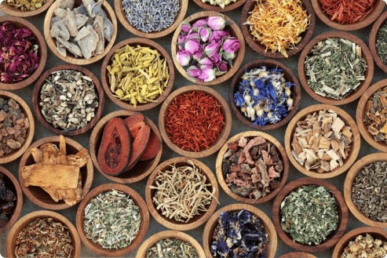

Shree Sahaj Naturopathy & Yoga Center
Shree Sahaj Naturopathy & Yoga Center
Shree Sahaj Naturopathy & Yoga Center
Shree Sahaj Naturopathy & Yoga Center
Naturopathy is a holistic approach to healthcare that emphasizes the body’s inherent ability to heal itself through natural means. It draws inspiration from traditional healing practices and incorporates various natural therapies, including herbal medicine, nutrition, hydrotherapy, acupuncture, and lifestyle counseling. The core principles of naturopathy include:
Naturopathy’s historical roots can be traced back to ancient healing traditions, including Ayurveda, Traditional Chinese Medicine, and European herbalism. The modern naturopathic movement gained momentum in the late 19th and early 20th centuries, primarily in Europe and North America. Critics of naturopathy often raise concerns about the lack of scientific evidence for some of its practices, potential delays in seeking conventional medical treatment, and the need for rigorous regulation within the field.
Naturopathy is a holistic approach to healthcare that celebrates the body’s inherent ability to heal and maintain balance when provided with the right tools and conditions. Its foundation lies in the belief that the healing power of nature can guide individuals toward optimal well-being. This approach draws inspiration from a rich tapestry of ancient healing traditions, including Ayurveda, Traditional Chinese Medicine, and European herbalism. Modern naturopathy, as we know it today, emerged in the late 19th and early 20th centuries, gaining momentum in Europe and North America.
One of naturopathy’s core tenets is the emphasis on identifying and treating the root causes of illnesses rather than merely addressing symptoms. This principle reflects a deep understanding that true healing comes from resolving underlying imbalances that disrupt the body’s natural equilibrium. Naturopathic practitioners take the time to explore an individual’s physical, mental, emotional, and spiritual aspects, crafting personalized treatment plans that encompass a range of natural therapies.

Herbal medicine, a cornerstone of naturopathy, harnesses the potent healing properties of plants to restore and optimize health. Herbs are carefully selected based on their specific effects on various body systems, and they are often combined to create customized formulations. Nutritional therapy plays a vital role in naturopathy, recognizing that a balanced and nourishing diet is essential for maintaining vitality and preventing disease. Through dietary adjustments and supplementation, naturopathic practitioners guide individuals toward choices that support their unique health goals.
These timeless principles form the foundation of all our therapies, teachings, and healing practices—offering a path to inner harmony and lasting wellness.
Nature cure believes that there is certain force resident within the body called by some as vitality or inherent healing power or vital force which is ever with us and which keeps the body normal and healthy. Health of a person is dependent upon said vital force. This is in fact the protective force of the body and is ultimately responsible for all the reactions induced by Nature Cure treatments for recovery of the body. This is the force which eliminates the toxins from the body. This is the force responsible for multiplication of the cells. It is the force which directs the law and order within the body so that all the processes are carried on in a systematic manner and not haphazardly. It is due to this force that living creatures develop from an ovum to maturity. The unfailing tendency of the body to return to normal when disturbed or distorted is due to presence of this force.
It is believed that this inherent power, which has built our bodies from a tiny speck to full grown bodies, is also the power which heals us when diseased without any recourse to outside aids of any sort. It is due to this concept of vitality that in the treatment of diseases what a Naturopath does is simply to allow the natural healing power within the body to assert itself without interference. Health is a natural condition of human body and the result of allowing it to function according to its biological requirement. Disease can not exist when these requirements are not interfered with or disturbed. Therefore, it is logical that all that is necessary in the cure of diseases is for the disturbing cause to be removed. With the disturbing factors removed the inherent healing power will assert itself and re-establish health. All that nature desires from human skill in conditions of disease is the removal of disturbing causes after which she will of her own accord bring the body back to health. In every case of so called diseases the vital force comes at work to correct it. When the toxins collect in the system because the eliminating organs such as lungs, kidneys, bowels and the skin have stopped functioning in the normal way, the vital power makes an effort to eliminate them in her normal way.
Some experts believe that good appetite and good health are closely connected. In ancient Indian texts, the digestive power (called Jatharagni) is linked to the body's inner energy or vital force. It is said that in people or animals with strong vitality (shown by strong hunger), the body can extract everything it needs from the food eaten, even if the food isn’t perfectly balanced. This process is considered a natural but mysterious power within the body.
However, modern science disagrees with this. It argues that a balanced diet—with the right mix of carbohydrates, fats, proteins, vitamins, and minerals—is essential. If the old belief were fully true, we wouldn’t see deficiency diseases like protein deficiency, which are common in poorer countries. Supporters of the ancient idea respond by pointing out animals like cows and elephants. They eat simple, plant-based diets but still grow large and healthy. This suggests their bodies may produce the needed nutrients from what they eat through some unknown internal process.
In conclusion, while the body might have ways to manage in tough times, balanced and nourishing food is still essential for health. Depending too much on the body’s emergency powers can weaken them over time. So, we should support our health by eating well and avoiding habits that reduce our inner strength.
Before we go into various principles of Naturopathy it should be borne in mind that the body possesses the power of adaptation to different circumstances. Adaptation means the adjustment of an organism, whether a plant, animal or man to its environment. Adaptation also refers to the ability of a part of the body to adjust. For example, the pupil of the eye automatically adapts itself to the amount of light striking it. It does this quickly, so that within a few seconds, a person going from a brightly lit area to semi darkness can see satisfactorily. Humans adapt well, so that they can survive in cold or hot climates, in rainy or dry seasons and under either sparsely populated or crowded condition. They can also adapt to stress. The human organs and glandular system enable people to live and work under different circumstances and to relax when the stress conditions are removed. An entire species, human or animal also may adapt slowly to radically changed circumstances through the process of evolution.
With this background we shall now proceed to fundamental principles of Nature Cure. The three fundamental principles as enumerated in Herry Benjamin’s famous book “Everybody’s Guide to Nature Cure” is reproduced below as it explains in a very simple and lucid language the essence of Naturopathy.
Herry Benjamin in his famous book “Everybody’s Guide to Nature Cure” has mentioned the Fundamental Principles of Nature Cure as given below.
It must be fully understood that these three fundamental principles of Nature Cure are not the outcome of mere theorising into the nature and treatment of diseases, but are logical deductions and conclusions arrived at from nearly a centaury of effective naturopathic treatment of diseases, in Germany, America, India, UK and several other countries and proved over and over again by the results obtained.
(1) The first and most important fundamental principle of Nature Cure is that all forms of diseases are due to the Same cause namely the accumulation in the system of waste materials and bodily refuse, which has been steadily piling up in the body of the individual concerned through years of wrong habits of living, the chief of these being wrong feeding, improper care of the body, and habits tending to set up enervation and nervous exhaustion, such as worry, overwork, excesses and abuses of all kinds.
From this first principle of Naturopathy it follows that the only way in which disease can be cured is by the introduction of methods which will enable the system to throw off these toxic accumulations which are daily clogging the wheels of the human machine; and to that sole end all natural treatment is directed. It must be pointed out for the readers’ guidance that during the vital processes which are going on continuously in our bodies, waste products are always forming; but in the healthy individual they are immediately removed from the system through the medium of the organs of elimination which are the kidneys, bowels, lungs, and skins. But if, as is the case with most people , the waste products accumulate at a rate in excess of the capacity of the above mentioned organs to deal with them, then commences the clogging process which is the fundamental cause of all future ill health.
(2) The second principle of Nature Cure is that the body is always striving for the ultimate good of the Individual, no matter how ill treated it may be and that all acute diseases such as fevers (scarlet fever, measles, diphtheria, typhoid etc), colds, diarrhoeas, skin eruptions of all kinds, inflammations etc are nothing more than self initiated attempts on the part of the body to throw off the accumulations of waste material (some of them hereditary ) which are interfering with its proper functioning and that all chronic diseases such as valvular diseases of the heart, diabetes, kidney diseases, rheumatism, bronchitis etc are really the results of the continued suppression of these same acute diseases (or self initiated attempts at body cleansing) by orthodox medical methods of treatments. (Those methods include the administration of poisonous drugs, vaccines, narcotics, gland extracts and X-ray therapy; and the removal of affected parts by means of surgical operations).
From the Nature Cure standpoint, therefore, when a doctor ‘cures’ a patient of an acute disease through the agency of drugs, sera, anti-toxins, etc or through the medium of the ’surgeon’s knife’, what he really does is to force the toxins (waste products), which the body is endeavoring to throw off, further back into the system and it is the concentration of these toxins (plus the drugs, etc administrated by the doctor) in the vital organs and other structures which form the bases of future chronic diseases. Obviously, the form which chronic disease will take in any given individual whether it be rheumatism, Bright’s disease, asthma, diabetes, etc will depend upon his bodily constitution and hereditary tendencies but the main fact to be noted is that according to Nature Cure, all chronic diseases originate in the first place through the suppression, by wrong medical methods of treatment, of acute diseases.
(3) The third principle of Nature Cure is that the body contains within itself the power to bring about a return to that condition of normal well being known as health, provided the right methods are employed to enable to do so, that is to say, the power to cure disease lies not in the hands of the doctor or specialist, but within the body itself.
Within this will be found the source of that healing power which Nature is ever ready to bestow on all who are willing to accept her laws and live in accordance with them.
It is only when we realize that there is no magic in the “Surgeon’s knife” or medicine (Patent or otherwise) and are ready to accept the truth of the above statement which is literally “that the only ones capable of curing them are themselves” that we can hope for a diminution in the appalling and ever growing amount of disease present in all civilized countries at the present time.
"Nature is Healer"
The Healing Power of Nature, the essence of nature cure, and the various methods of treatment which spring from it, is the realization and fundamental acceptance on the part of those practicing it of the fact that within himself every individual possesses the power to cure himself of any disease from which he/she may be sufferings provided. Although the healing power in question cannot be seen or weighed or measured, there is, nevertheless no doubt as to its existence; for it is the same power within us which is responsible for the carrying on of all the multifarious activities of our bodies. It is the same power which year in and year out, in the deepest unconsciousness of sleep and the greatest height of activity, controls of the functioning of every organ or part of the human organism without our conscious knowledge, or even our realization sometimes.
That power within us, which makes the heart to beat, the blood to flow, the eye to see, the ear to hear, the hair to grow, lungs to breathe, the brain to function will, if given suitable opportunity, renew diseased tissue in an organ or part of the body which is functioning wrongly, cleanse the cells, purify the blood, give new vitality to digestive system, and, in short, make life worth living once again to the sufferer from disease who has the sense to realize the fact and the determination to carry out the necessary measures.
Fasting, Dieting, osteopathy, Chiropractic, Massage, radiant light and heat, electrical treatment, water treatment etc., all play their part and have their value (in greater or lesser degree), but only in so far as they allow the natural forces within the body a fuller opportunity to manifest themselves than would otherwise be possible. To claim for any one of them that it, and it alone, can “cure” disease (as is done in many instances by misguided individuals carried away by a misconception as to the value of the special treatment in question) is as ridiculous an assumption as any of those made by orthodox medical science, and is a negation of the basis upon which all Natural treatment rests – the sovereign Power of Nature herself as the one healer of disease.
Osteopathy cannot cure disease, chiropractic cannot cure disease; massage or artificial sunlight cannot cure disease; even fasting and dieting – the two greatest factors in the scheme of natural treatment cannot be really said to cure disease; yet each and all of them have their rightful position in Naturopathic practice, as subsidiary helpers of the omnipotent healing power of the natural forces latent within the body of each and every individual.
It has already been demonstrated that the essence of all disease is the accumulation in the system of waste matter and impurities due to wrong habits of living (especially dietetic), and that their elimination from the body is what Nature is striving for all the time; so that it will surely not be regarded as strange, therefore when it is said that it is through detoxification (through the increase of the powers of elimination of any given individual) that these same healing powers, latent within all of us, can be given a free hand to function and fulfill their self-appointed task.
To introduce what we Naturopaths call a “detoxification regime ” is to increase the individual powers of elimination; is to throw open wide the portals of the organism, as it were, to the healer within; is to allow the accumulated waste matters of years to be swept from clogged and infected tissues, and thus pave the way for that process of regeneration and rebuilding of muscle, nerves, blood, and vital organs which only Nature herself – the creator of all – can accomplish.
Through the introduction of natural treatment in the form of fasting (that is, cessation from food) and/or scientific dieting, conjoined with measures for the increasing of skin and bowel action, exercise, deep breathing etc., this same power within us, which is for ever looking after the body’s welfare to the uttermost of its ability, but is always overworked (in the vast majority of cases), is at last given an opportunity to turn its attention to the work of reconstruction and repairs. It is at last free to cleanse and renovate bodily mechanisms in which all the cylinders (so to speak) are choked up i.e., clogged with impurities and bodily refuse generated in the system through unhygienic ways of livings but which heretofore it has been unable to deal with. It is at last free to rid the body of disease, because at last it is being helped in its work, not hindered.
That is all there is to it; there is no mystery attached to the matter at all (except in so far as it is part of the eternal mystery of life, which will ever remain a mystery, never to be solved even after death). Just as when, after one cuts a finger, it heals of its own accord if the right conditions are permitted, so, when a gastric ulcer is present or a lung is diseased, if the right methods are adopted will the ulcer be reabsorbed and the injured stomach lining repaired or new lung tissue built, as the case may be, by the eternal healer Nature.
The sick, as a rule, does not consider Nature Cure except as a last resort. The methods and requirements of Nature Cure appear at first so unusual that most persons seek to evade them as long as they have the least faith in the miracle working power of the poison bottles, a metaphysical healer or the surgeon’s knife. When health’s wealth and hope are entirely exhausted, then the chronic sufferer grasps at Nature Cure as a drowning man clutches at a straw. But even though ninety percent of the cases which come to us are of the apparently incurable type, our total failures are few and far between.
If there is sufficient vitality in the body to react to natural treatment and if the destruction of vital parts and organs has not advanced too far, a cure is possible. Often the seemingly hopeless cases yield most readily.
Have faith in God. He is Omnipotent, Omnipresent, and Omniscient. It is HE who rewards. Do your job sincerely to the best of your ability and leave the fruits to HIM. HE will certainly reward the patient as well as the physician who serves selflessly and with devotion.
We believe in the power of nature, the wisdom of tradition, and the strength of the inner spirit.